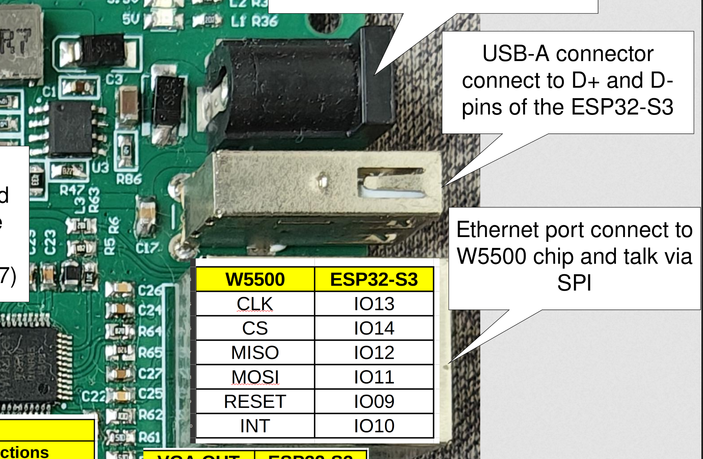
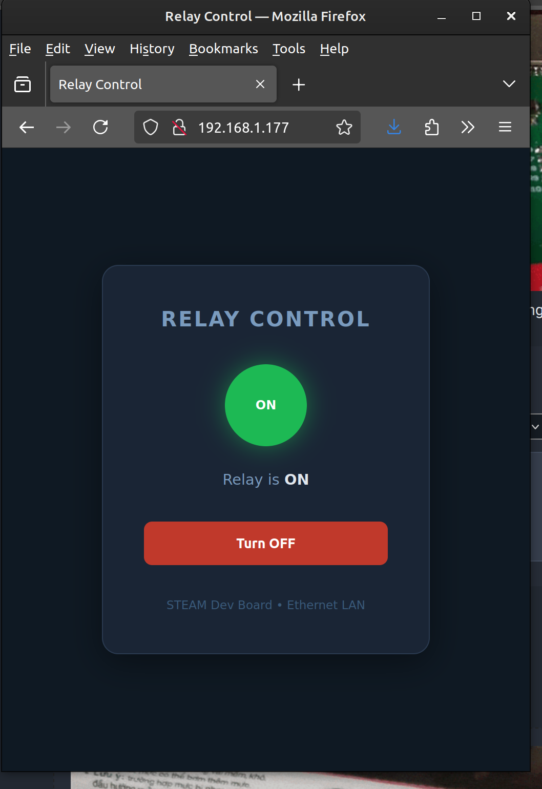
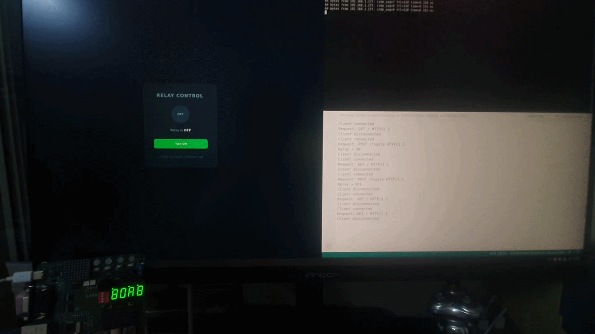

Project 9 : Ethernet-Controlled Relay Switch via Web Browser#
Introduction#
In this project, you will learn how to control a relay over a local area network (LAN) using a web browser. The ESP32-S3 hosts a small web server that any device on the same network can visit to toggle the relay ON or OFF — no internet connection, no cloud service, no app required.
By the end of this tutorial, you will know how to:
Initialise the W5500 Ethernet chip over SPI with custom pin assignments.
Start a simple HTTP web server on the ESP32-S3.
Serve an HTML control page to a browser on the LAN.
Parse HTTP requests to determine which action the user requested.
Control a relay output based on browser input.
Requirements#
Before starting, make sure you have the following:
The STEAM development kit or The STEAM standalone microcontroller board
USB cable (for programming)
Arduino IDE with ESP32 toolchain installed
A network switch or router with an available Ethernet port
An Ethernet cable (Cat 5e or better)
A device with a web browser (PC, phone, or tablet) on the same LAN
All relay and Ethernet hardware is already integrated on the STEAM development board. No external components are needed.

The interfacing description of the microcontroller board#
Pin assignments used in this project:
Signal |
ESP32-S3 GPIO |
Description |
|---|---|---|
SPI CLK |
IO13 |
SPI clock to W5500 |
SPI CS |
IO14 |
Chip Select (active LOW) |
SPI MISO |
IO12 |
Data from W5500 to ESP32-S3 |
SPI MOSI |
IO11 |
Data from ESP32-S3 to W5500 |
RESET |
IO9 |
Hardware reset for W5500 (active LOW) |
INT |
IO10 |
Interrupt output from W5500 (unused in this project) |
Relay |
IO45 |
Relay coil driver (HIGH = energised) |
Background: Key Concepts#
The W5500 Ethernet Controller#
The W5500 is a hardwired TCP/IP Ethernet controller that handles the entire network stack in hardware. It communicates with the ESP32-S3 over the SPI bus, leaving the MCU free to run your application code. Because it contains its own TCP/IP engine, you do not need to manage packets, checksums, or protocol state machines — you simply open a socket and read or write data.

W5500 internal block diagram#
How the Web Server Works#
When a browser visits http://<board-ip>/, it sends an HTTP GET request — a short text message that identifies what page it wants. The ESP32-S3 reads that request, decides what to do (serve the main page, toggle the relay, etc.), and responds with an HTML document the browser renders.
This project uses HTTP redirects after actions (POST/Redirect/GET pattern) so that refreshing the browser does not accidentally re-send a relay command.
Note
The web server in this project is single-client and synchronous — it handles one HTTP request at a time. This is perfectly adequate for a LAN control panel used by a small number of users.
Required Libraries#
This project uses the Ethernet library with W5500 support. Install it from the Arduino Library Manager:
Open Arduino IDE.
Go to Tools → Manage Libraries.
Search for Ethernet by the Arduino team (version 2.0 or later, which includes W5500 support).
Click Install.
Note
The built-in Ethernet library uses Ethernet.init(csPin) to select the chip-select pin. Custom SPI pin remapping is done via SPI.begin(sck, miso, mosi, cs) before initialising Ethernet.
Writing the Program#
Create a new sketch in the Arduino IDE and enter the following code:
#include <SPI.h>
#include <Ethernet.h>
// ── Pin definitions ────────────────────────────────────────────────────────
#define ETH_CLK 13
#define ETH_CS 14
#define ETH_MISO 12
#define ETH_MOSI 11
#define ETH_RESET 9
#define ETH_INT 10 // Wired but not used in this project
#define RELAY_PIN 45
// ── Network configuration ──────────────────────────────────────────────────
// MAC address — must be unique on your LAN.
// The label on your board, or keep this default for a single-board setup.
byte mac[] = { 0xDE, 0xAD, 0xBE, 0xEF, 0xFE, 0xED };
// Static IP — change to suit your network (or use DHCP, see Experiments).
IPAddress ip(192, 168, 1, 177);
IPAddress gateway(192, 168, 1, 1);
IPAddress subnet(255, 255, 255, 0);
// ── Globals ────────────────────────────────────────────────────────────────
EthernetServer server(80); // Listen on port 80 (standard HTTP)
bool relay_sts = false; // Relay starts de-energised
// ── HTML page ──────────────────────────────────────────────────────────────
// Stored in flash (F macro) to save RAM.
// The %STATE% and %BTN% tokens are replaced at runtime.
const char HTML_TEMPLATE[] PROGMEM = R"rawhtml(
<!DOCTYPE html>
<html lang="en">
<head>
<meta charset="UTF-8">
<meta name="viewport" content="width=device-width, initial-scale=1">
<title>Relay Control</title>
<style>
*{box-sizing:border-box;margin:0;padding:0}
body{font-family:sans-serif;background:#0f1923;color:#e0e6ed;display:grid;place-items:center;min-height:100vh}
.card{background:#1a2535;border:1px solid #2a3a50;border-radius:16px;padding:2.5rem;text-align:center;width:320px;box-shadow:0 8px 32px rgba(0,0,0,.4)}
h1{font-size:1.25rem;letter-spacing:.08em;color:#7a9bbe;margin-bottom:2rem;text-transform:uppercase}
.indicator{width:80px;height:80px;border-radius:50%;margin:0 auto 1.5rem;display:flex;align-items:center;justify-content:center;font-size:.75rem;font-weight:700;transition:.3s}
.on{background:#1db954;box-shadow:0 0 24px #1db95488;color:#fff}
.off{background:#2a3a50;color:#7a9bbe}
.status-label{font-size:.9rem;color:#7a9bbe;margin-bottom:2rem}
.status-label span{font-weight:700;color:#e0e6ed}
button{width:100%;padding:.85rem;border:none;border-radius:8px;font-weight:700;cursor:pointer}
button:active{transform:scale(.97)}
.btn-on{background:#1db954;color:#fff}
.btn-off{background:#c0392b;color:#fff}
.footer{margin-top:2rem;font-size:.72rem;color:#3a5a7a}
</style>
</head>
<body>
<div class="card">
<h1>Relay Control</h1>
<div class="indicator %INDCLASS%">%INDLABEL%</div>
<p class="status-label">Relay is <span>%STATE%</span></p>
<form method="POST" action="/toggle">
<button class="%BTNCLASS%">%BTNLABEL%</button>
</form>
<p class="footer">STEAM Dev Board • Ethernet LAN</p>
</div>
</body>
</html>
)rawhtml";
// ── Helper: send the control page ─────────────────────────────────────────
void sendPage(EthernetClient& client) {
// Build the response string from the template, substituting live values.
String page = String((__FlashStringHelper*)HTML_TEMPLATE);
if (relay_sts) {
page.replace("%STATE%", "ON");
page.replace("%INDCLASS%", "on");
page.replace("%INDLABEL%", "ON");
page.replace("%BTNCLASS%", "btn-off");
page.replace("%BTNLABEL%", "Turn OFF");
} else {
page.replace("%STATE%", "OFF");
page.replace("%INDCLASS%", "off");
page.replace("%INDLABEL%", "OFF");
page.replace("%BTNCLASS%", "btn-on");
page.replace("%BTNLABEL%", "Turn ON");
}
client.println(F("HTTP/1.1 200 OK"));
client.println(F("Content-Type: text/html"));
client.println(F("Connection: close"));
client.print(F("Content-Length: "));
client.println(page.length());
client.println();
client.print(page);
}
// ── Helper: send a redirect response ──────────────────────────────────────
void sendRedirect(EthernetClient& client, const char* location) {
client.println(F("HTTP/1.1 303 See Other"));
client.print(F("Location: "));
client.println(location);
client.println(F("Connection: close"));
client.println();
}
// ── Setup ──────────────────────────────────────────────────────────────────
void setup() {
Serial.begin(115200);
// Relay
pinMode(RELAY_PIN, OUTPUT);
digitalWrite(RELAY_PIN, relay_sts);
// Hardware-reset the W5500
pinMode(ETH_RESET, OUTPUT);
digitalWrite(ETH_RESET, LOW);
delay(10);
digitalWrite(ETH_RESET, HIGH);
delay(200); // Allow W5500 to complete its internal reset
// Remap SPI to the custom pins and init Ethernet
SPI.begin(ETH_CLK, ETH_MISO, ETH_MOSI, ETH_CS);
Ethernet.init(ETH_CS);
Ethernet.begin(mac, ip, gateway, gateway, subnet);
// Check hardware link
if (Ethernet.hardwareStatus() == EthernetNoHardware) {
Serial.println(F("ERROR: W5500 not found. Check SPI wiring."));
while (true) { delay(1000); } // Halt — nothing can be done
}
while (Ethernet.linkStatus() == LinkOFF) {
Serial.print(F("WARNING: Ethernet cable not connected."));
Serial.println(Ethernet.linkStatus());
delay(1000);
}
server.begin();
Serial.print(F("Server ready at http://"));
Serial.println(Ethernet.localIP());
}
// ── Loop ───────────────────────────────────────────────────────────────────
void loop() {
EthernetClient client = server.available();
if (!client) return;
Serial.println(F("Client connected"));
String request = "";
bool firstLine = true;
String requestLine = "";
// Read the HTTP request (first line contains method + path)
while (client.connected()) {
if (!client.available()) continue;
char c = client.read();
if (firstLine) {
if (c == '\n') {
firstLine = false;
} else if (c != '\r') {
requestLine += c;
}
} else {
// Read and discard the remaining headers
// until we reach the blank line (\r\n\r\n)
request += c;
if (request.endsWith("\r\n\r\n")) break;
}
}
Serial.println("Request: " + requestLine);
// Route the request
if (requestLine.startsWith("POST /toggle")) {
relay_sts = !relay_sts;
digitalWrite(RELAY_PIN, relay_sts);
Serial.print(F("Relay → "));
Serial.println(relay_sts ? F("ON") : F("OFF"));
sendRedirect(client, "/"); // PRG pattern: redirect after POST
} else {
sendPage(client); // GET / → serve the control page
}
// Give the browser time to receive the response, then close
delay(10);
client.stop();
Serial.println(F("Client disconnected"));
}
Connect the board to your computer using the USB cable.
Before uploading, edit the
ip,gateway, andsubnetvariables to match your local network (see Finding Your Network Settings below).Open the Arduino IDE.
Select ESP32S3 Dev Module from Tools → Board → esp32.
Select the correct serial port from Tools → Port.
Click the Upload button and wait for completion.
Open the Serial Monitor (Tools → Serial Monitor, baud 115200).
Connect an Ethernet cable between the board and your network switch or router.
The Serial Monitor will print the board’s IP address once it is ready.
On Windows, open a Command Prompt and run ipconfig. Look for the adapter connected to your LAN:
IPv4 Address — your PC’s address; assign the board a different unused address in the same range.
Default Gateway — use this as the
gatewayvalue.Subnet Mask — use this as the
subnetvalue.
On macOS / Linux, run ifconfig or ip addr in a terminal.
Example: if your PC shows 192.168.1.100 with gateway 192.168.1.1 and mask 255.255.255.0, you could assign the board 192.168.1.177.

The relay control page as seen in a web browser#
After uploading and connecting the Ethernet cable:
The Serial Monitor prints the board’s IP address.
Opening that IP in any browser on the same LAN shows the relay control page.
The page displays the current relay state (ON or OFF) with a colour indicator.
Clicking the button toggles the relay — you will hear a click from the relay — and the page refreshes to show the new state.
The relay state is preserved between browser sessions; only a power cycle resets it.

Initialising the W5500
The W5500 requires a hardware reset before use. The code drives ETH_RESET LOW for 10 ms and then HIGH, then waits 200 ms for the chip’s internal power-on sequence to complete.
digitalWrite(ETH_RESET, LOW);
delay(10);
digitalWrite(ETH_RESET, HIGH);
delay(200);
Because the W5500 is connected to non-default SPI pins, SPI.begin() is called with the custom GPIO assignments before Ethernet.init():
SPI.begin(ETH_CLK, ETH_MISO, ETH_MOSI, ETH_CS);
Ethernet.init(ETH_CS);
Ethernet.begin(mac, ip, gateway, gateway, subnet);
The code then checks that the W5500 was found (EthernetNoHardware means the SPI wiring is wrong) and whether a cable is connected (LinkOFF).
The Request Loop
On every iteration of loop(), the server checks for a waiting client. If one is present, it reads characters until the first line of the HTTP request is captured — for example:
GET / HTTP/1.1
POST /toggle HTTP/1.1
The remaining header lines are read and discarded. No request body is needed because the toggle action is encoded entirely in the URL path.
Routing
Two routes are handled:
HTTP Method |
Path |
Action |
|---|---|---|
GET |
|
Serve the HTML control page |
POST |
|
Toggle relay, then redirect browser to |
Any other path also falls through to sendPage(), returning the main page.
Post / Redirect / Get (PRG) Pattern
After the toggle POST, the server replies with HTTP 303 (redirect to /) rather than directly serving the page. This means if the user refreshes the browser, it performs a harmless GET instead of resubmitting the POST — preventing accidental double-toggles.
The HTML Template
The HTML page is stored in program flash (PROGMEM) using a raw-string literal. Five placeholder tokens (%STATE%, %INDCLASS%, %INDLABEL%, %BTNCLASS%, %BTNLABEL%) are replaced at runtime with values that reflect the current relay state before the response is sent.
The page is self-contained — no external CSS frameworks or JavaScript libraries are loaded — making it functional even without internet access on the LAN.
Try the following modifications to deepen your understanding.
Use DHCP instead of a static IP so the router assigns the address automatically:
// Replace Ethernet.begin(mac, ip, ...) with: if (Ethernet.begin(mac) == 0) { Serial.println(F("DHCP failed — check cable")); while (true) { delay(1000); } } Serial.print(F("DHCP address: ")); Serial.println(Ethernet.localIP());
Note
With DHCP, the board’s IP address may change after a reboot. Check the Serial Monitor or your router’s client list to find the new address.
Add a status API endpoint that returns the relay state as plain text, useful for automation scripts:
} else if (requestLine.startsWith("GET /status")) { String body = relay_sts ? "ON" : "OFF"; client.println(F("HTTP/1.1 200 OK")); client.println(F("Content-Type: text/plain")); client.print(F("Content-Length: ")); client.println(body.length()); client.println(); client.print(body);
Test it from a terminal on the same LAN:
curl http://192.168.1.177/statusAdd separate ON and OFF endpoints so a home-automation system can set state directly instead of toggling:
} else if (requestLine.startsWith("POST /on")) { relay_sts = true; digitalWrite(RELAY_PIN, relay_sts); sendRedirect(client, "/"); } else if (requestLine.startsWith("POST /off")) { relay_sts = false; digitalWrite(RELAY_PIN, relay_sts); sendRedirect(client, "/");
Add a page title and board name to the HTML template so that multiple boards on the same LAN are easy to distinguish in browser tabs.
Blink the built-in LED (GPIO8) whenever an HTTP request arrives, giving a visible indicator that the board is receiving traffic.
Troubleshooting#
Symptom |
What to check |
|---|---|
Serial prints “W5500 not found” |
Verify SPI wiring (CLK/MISO/MOSI/CS pins). Confirm the W5500 reset line is not stuck LOW. |
Serial prints “cable not connected” |
Seat the Ethernet cable firmly. Try a different cable or port on the switch. |
Browser says “site can’t be reached” |
Confirm the board’s static IP is in the same subnet as your PC. Ping the IP from a terminal ( |
Page loads but relay does not click |
Check that GPIO45 is not held LOW by another peripheral. Confirm the relay supply voltage is present. |
Page shows wrong state after power cycle |
Expected — |
Multiple rapid clicks when pressing the button |
The browser submitted multiple requests. Confirm the PRG redirect is working (HTTP 303 after POST). |
Summary#
In this tutorial, you learned how to turn the ESP32-S3 into a networked relay controller. The W5500 Ethernet chip is initialised over SPI using custom pin assignments, and the built-in Ethernet library manages the TCP/IP stack in hardware. A minimal HTTP server listens for browser requests, serves a self-contained HTML control page, and toggles a relay in response to user actions.
Key concepts covered include:
Remapping SPI pins with
SPI.begin(sck, miso, mosi, cs)for non-default hardware layouts.Initialising the W5500 with a hardware reset sequence.
Configuring a static IP address to make the board consistently reachable on the LAN.
Parsing HTTP request lines to route GET and POST requests.
Implementing the Post/Redirect/Get (PRG) pattern to prevent duplicate actions on browser refresh.
Serving a self-contained, styled HTML page from
PROGMEMto conserve RAM.Controlling a relay output based on network input.
This project brings together SPI peripheral control, TCP/IP networking, HTTP protocol handling, and GPIO output in a single application — a common pattern in industrial IoT and home-automation firmware.